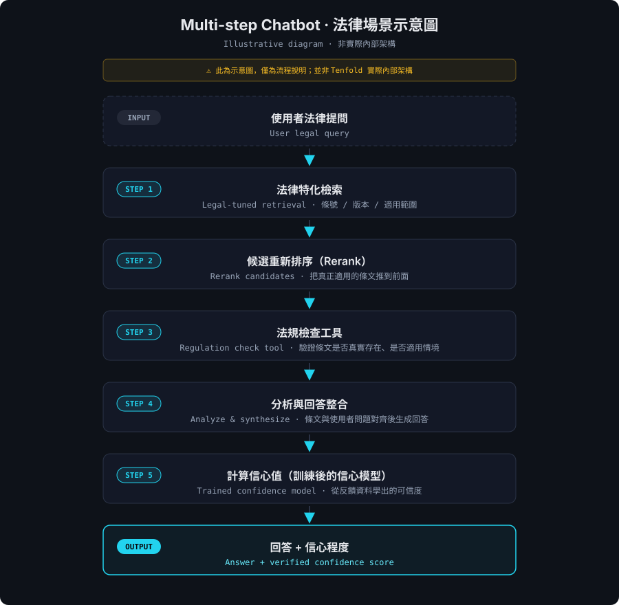
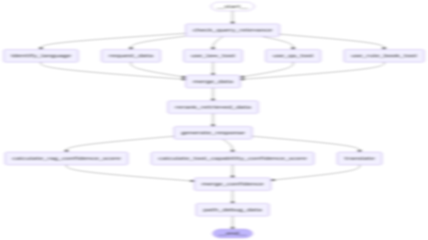
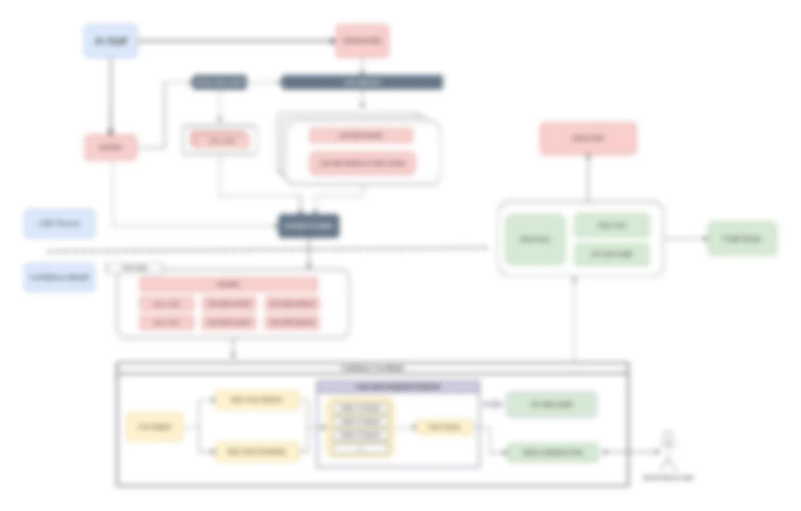

This was the founding product I built after joining the
startup Tenfold AI — a legal advisor AI chatbot.
Law is a domain where the bar for "answer quality" is exceptionally high:
the answer has to cite the correct statute and
precisely address the user's actual question. If any step
along the way goes wrong, the output may look like a legal opinion but isn't
something anyone can trust.
A generic RAG pipeline doesn't cut it here, so at the context layer I designed
a legal-tuned retrieval mechanism, and on top of the answer
flow I stacked a multi-step architecture — with rerank, a
regulation-check tool, and other verifiers — capped by a
verified confidence score attached to every response.
Users don't just see an answer; they see how strong the evidence behind it is.
這是我加入新創公司 Tenfold AI 後打造的最一開始的產品 ——
一款法律顧問 AI Chatbot。法律是一個對「回答品質」要求極高的領域：
答案要引用正確的法條、要精確對應使用者實際的問題，
中間任何一步走偏，輸出的內容看起來像法律意見，但實際上沒辦法被信任。
The difference between a legal question and a general customer-service
question isn't just "more specialized vocabulary" — it's that
the bar for right vs. wrong is different. A
"roughly correct" answer is acceptable in customer service; in a legal
setting it's wrong — one wrong digit in the article number, one missing
prerequisite in the applicable scenario, and the whole conclusion tilts off.
Citations must be correct引用要正確The retrieved statute has to actually exist, with the
right article number and the right version — not just "semantically close".
A general-purpose vector retriever easily pulls articles that are
"literally adjacent but don't actually apply", which in legal context is a
straight factual error.撈回來的法條必須是真的存在、條號正確、版本對得上的條文 ——
不是「語意上接近」就好。
一般通用的向量檢索很容易撈到「字面相關但實際不適用」的條文，
這在法律情境是直接的事實錯誤。
Answers must be precise回答要精確Even with the right article retrieved, the answer must
align with the user's specific scenario — the same
statute applies differently in different contexts, so the model can't just
paste the article verbatim and call it done. It has to pick out which part
of the statute actually applies based on the question's concrete
conditions.就算撈到對的條文，回答也要對齊使用者問題的具體情境 ——
同一條法律在不同情境下適用方式不同，
模型不能把條文照本宣科貼上來就交差。
必須能根據問題的具體條件，挑出條文中真正適用的部分。
Neither of these is solved by bolting a general-purpose LLM onto an
off-the-shelf retriever. The whole context pipeline has to be redesigned
for the legal domain.
To meet both requirements at once, I designed a
multi-step answer flow: each step resolves a single,
well-defined sub-problem and hands the result off to the next. The
architecture refuses to cram everything into a single LLM call — every
step uses the most appropriate tool for what it's doing.
Illustration · Edward Chiu · legal scenario · not Tenfold's actual architecture示意圖 · Edward Chiu · 法律場景 · 非實際內部架構

Multi-step answer flow illustration · legal scenario · from user question through to answer + confidence · click to enlarge Note: this is an illustration of the flow concept, not Tenfold's actual internal architecture.多步驟回答流程示意圖 · 法律場景 · 從使用者提問到回答 + 信心程度的逐步流程 · 點圖可放大 注意：此為示意圖，僅用於說明流程概念；並非 Tenfold 實際內部架構。
RetrievalRetrieval specialized for legal corpora — extending
general-purpose vector retrieval into a layer that handles article numbers,
statute versions, and scope of applicability correctly, providing the
downstream steps with clean, trustworthy material.針對法律語料做特化的檢索 ——
從一般通用向量檢索擴展到能正確處理條號、法規版本、適用範圍的檢索層，
為後面的步驟提供乾淨、可信的素材。
RerankRetrieved candidates don't go straight to the LLM —
they go through a rerank step that pushes the articles that
actually apply to the top, so the LLM sees
pre-filtered material rather than a coarsely-ordered
list.檢索回來的候選不是直接交給 LLM，而是經過 rerank 重新排序 ——
把「真正適用使用者問題」的條文推到前面，
讓 LLM 在生成時看到的是已經被篩選過的素材，
而不是一份排序粗糙的清單。
Regulation check (Tool)法規檢查（Tool）A regulation-check tool is added at
generation time, actively verifying whether the articles the model cites
actually exist, are being misapplied, or fail to align with the question's
scenario. This step is one of the biggest differences between legal RAG
and generic RAG — turning "factual correctness" into a verifiable stage of
the pipeline rather than hoping the LLM doesn't hallucinate.在生成階段加入法規檢查工具，
主動驗證模型引用的條文是否真的存在、是否被誤用、
是否跟問題的情境對得上。
這一步是法律 RAG 跟一般 RAG 最大的差別之一 ——
把「事實正確性」變成 pipeline 裡的可驗證環節，
而不是寄望 LLM 自己不要幻覺。
Answer integration回答整合Integrate the verified articles with the user's
question into the final answer — keeping the precision of the legal
citations while expressing them in language the user can actually
understand.把通過檢查的條文跟使用者問題整合成最終回答 ——
保留法律引用的精確性，同時用使用者讀得懂的方式表達。
Every step is an independently verifiable stage, so if anything in the
pipeline goes wrong it can be localized — for a product aimed at legal
professionals, that matters far more than "a black-box model that gives
a pretty answer".
Actual architecture (details blurred) · Edward Chiu實際架構（細節已模糊處理）· Edward Chiu

Actual LangGraph architecture · details blurred · click to enlarge實際 LangGraph 架構 · 細節已模糊處理 · 點圖可放大
Iteration: accuracy, latency, cost
迭代過程：準確率、效能與成本
This pipeline didn't land right the first time — across my entire Tenfold
tenure it went through multiple rewrites, from a working-but-imprecise
prototype all the way to something deliverable to legal professionals. The
concrete progress across three key metrics:
Accuracy準確率Answer accuracy on customer questions went from
~50% to 95% — driven mostly by
decomposing the single LLM call into verifiable steps, and by the
regulation-check tool turning "is the citation right" from a model wish
into a verifiable stage.回答客戶問題的正確率從約 50% 提升到 95% ——
這個提升主要來自把單一 LLM 呼叫拆成可驗證的多步驟、
以及法規檢查工具把「引用對不對」這件事從寄望 LLM 變成可驗證環節。
Response latency回應延遲Re-orchestrated with LangGraph, pulling
out nodes that have no dependency on each other (e.g. different kinds of
retrieval and checks) and running them in parallel —
only the nodes that actually need a previous step's output stay sequential.
Final LLM response latency improved by 35% with no
regression in answer quality.改用 LangGraph 重新編排，
把彼此沒有依賴關係的節點（例如不同類型的檢索與檢查）
抽出來做平行化執行 ——
只讓真正需要前一步結果的節點留在序列上。
最終 LLM response latency 提升 35%，
回答品質沒有退步。
Token costToken 成本Combined with prompt slimming and stricter filtering on
retrieval results, overall token usage dropped by about
60% — feeding less redundant text to the LLM
simultaneously improved latency, cost, and the signal-to-noise ratio of
the answer.搭配 prompt 精簡與 retrieval 結果的更嚴格篩選，
整體 token 使用量減少約 60% ——
少餵冗餘文本給 LLM，等於同時改善了延遲、成本、跟回答的訊噪比。
The pipeline also supports two output modes based on user needs —
a short answer for "just confirm this quickly" scenarios,
and a detailed answer when the user needs the full statute
citations and reasoning chain. The same multi-step pipeline adjusts only the
final integration step between modes, rather than running two completely
separate flows, so the legal-fact substrate stays consistent across both
outputs.
The multi-step architecture solves "how the answer is produced", but a more
fundamental question remains: how does the user know whether to
trust this answer? In a legal setting, users facing an AI answer
either fully trust it or fully don't — there's no signal in between that
tells them "how strong is the evidence here?"
So every answer comes with a verified confidence score.
But the way this score is produced is what really sets the system
apart.
多步驟架構解決了「回答怎麼生出來」的問題，
但還有一個更根本的問題：
使用者怎麼知道這個回答可不可信？
法律場景下，使用者面對 AI 的回答，要嘛全信、要嘛全不信 ——
中間缺少一個讓他「判斷依據強不強」的訊號。
因此每個回答都會附上一份驗證後的信心程度。
但這個分數的產生方式，才是這套系統真正不同的地方。
Why letting the LLM self-score isn't enough
為什麼單純讓 LLM 打分數不夠
Most off-the-shelf tools produce a confidence value by simply
asking the LLM to self-rate against a rubric — feed it a
prompt describing the criteria and let it score its own answer 0–100. It
sounds reasonable but hits a structural problem in practice:
the scores have almost no discriminative power.
LLM scoring has a strong round-number bias, clustering output around
anchor values like 70, 80, 90. No matter how detailed the rubric, the model
can't reliably distinguish "81" from "84". The result: an "85" answer and an
"88" answer look essentially identical to the user, and the score degrades
into a binary "passed / didn't pass" signal — losing the
fine-grained trustworthiness information it was supposed to
provide. This isn't a rubric-writing problem; it's what happens when you ask
a token-level sampling model to make a continuous-valued
judgment.
This system's approach: train a dedicated confidence model from feedback data
本系統的做法：從反饋資料訓練專屬信心模型
My design moves confidence scoring
from a prompt rubric to a trainable model — the system
continuously collects client feedback and edits during real
use (which answers got adopted, which got rewritten, which got
rejected) and uses those as labeled data to train a dedicated confidence
model. The resulting scores come from the distribution of actual usage
rather than the LLM's after-the-fact self-evaluation — and the discriminative
power is naturally far above the rule-based version.
This architecture brings two additional dimensions of extensibility:
Transferable across domains可遷移到不同領域"What counts as confident" varies across domains —
the level of certainty acceptable in legal advice has to step up another
notch in a medical setting. Because this architecture
depends on that domain's labeled data rather than a fixed prompt,
collecting feedback from a new domain is enough to train a confidence
model aligned with that domain's bar — instead of forcing one LLM rubric
onto every industry.「什麼算有信心」在不同領域的標準不同 ——
法律可以接受的把握度，到了醫療場景就要再嚴格一階。
這套架構因為依賴該領域的標註資料而不是固定 prompt，
只要收集到對應領域的反饋，
就能訓練出符合該領域標準的信心模型，
而不是用同一套 LLM 規則硬套到所有產業上。
Customizable per company可按公司客製化Within the same domain, different companies have
different internal definitions of a "good answer" — Company A may require
every answer to cite a specific article number; Company B may care more
about whether the tone is neutral. By collecting that company's
internal "good / not good" labels and retraining, the confidence
model can align with that company's evaluation standard rather
than applying one generic score to every client.同一個領域裡，不同公司對「好答案」的內部定義也不一樣 ——
公司 A 可能要求每個回答都引用條號，
公司 B 更看重語氣是否中立。
系統透過收集該公司內部的「好 / 不好」標註再訓練，
就能讓信心模型對齊該公司的評判標準，
而不是一份通用分數套到所有客戶。
Product screenshot · Tenfold AI產品截圖 · Tenfold AI

Each answer is tagged with a confidence score; users see the evidence strength directly · click to enlarge每個回答附上信心程度，使用者能直接看到依據強度 · 點圖可放大
On disclosure:
The training-data structure, feature engineering, and exact training pipeline
for this confidence model are subject to Tenfold AI's NDA and can't be
disclosed here. This section only describes the design motivation
and architectural properties. The entire confidence model was
designed and built by me.
關於揭露程度：
這套信心模型的訓練資料結構、特徵設計、與訓練流程的具體做法
受 Tenfold AI 保密協議限制，無法在此公開細節。
本節僅就設計動機與架構特性做說明。
整套信心模型由本人全權設計與開發。
The point of the confidence score goes deeper than "displaying one more
number" — it turns the AI from a "black box that hands down a conclusion"
into an assistant that can be inspected and evolves with how it's
used. The user receives not just an answer but the answer
plus a discriminative measure of evidence strength, and can decide
whether to verify further or accept it directly. For a legal setting where
the user has to be accountable for their own decision, that layer of
transparency is required, not a bonus.
整個信心分數的設計意義，比「多顯示一個數字」深得多 ——
它把 AI 從一個「給結論的黑盒」變成一個能被檢視、能跟著用法演進的助手。
使用者拿到的不只是答案，而是答案加上一份具鑑別度的依據強度，
能自己決定要不要進一步查證、或直接採信。
對需要為自己決策負責的法律場景，這層透明度是必要的，而不是加分項。